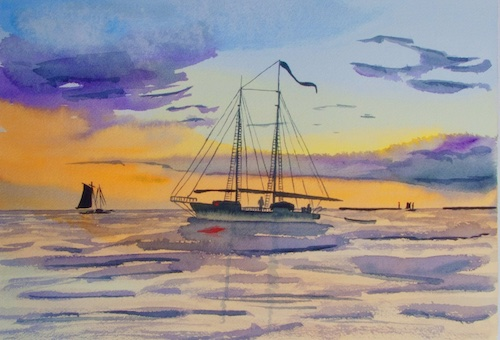
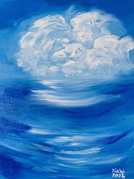
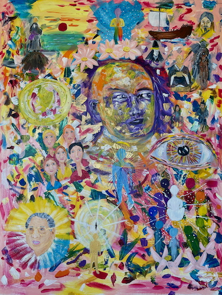
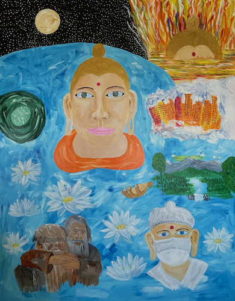
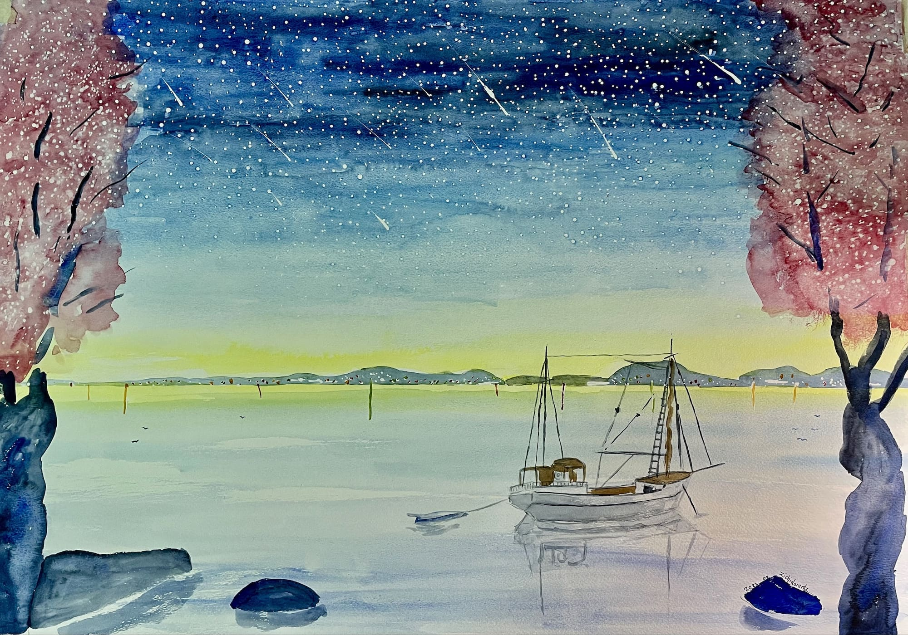
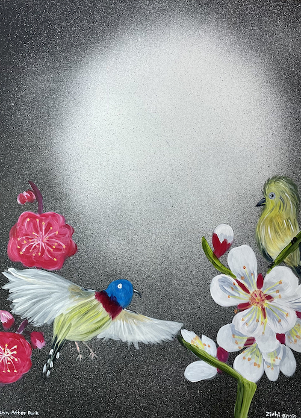
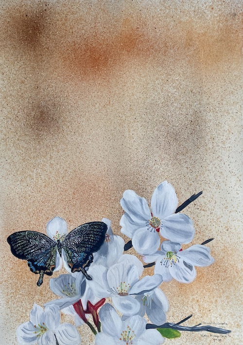
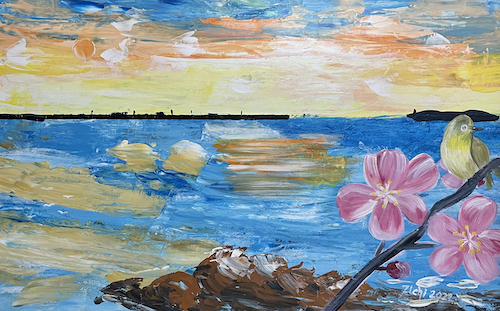

zichi Lorentz

Zichi Lorentz.
Visual Artist.Commentator-Publisher.
Liverpool UK (1952-1971).
London UK (1971-1994).
Japan (1994-).
Present location:Tatsuno City. Hyogo.
Moved from Kobe City at the end of 2018.

Major site update September 10 2026
1.Art is a Journey, Not a Destination
My painting style, “Zichism,” is rooted in the expressive language of color, light, and emotion.
As a colorist painter, I am drawn to the ever-changing beauty of the sky, the sea, flowers, and the natural world. Through color, gesture, and light, I seek to create more than an image—to evoke a feeling and awaken in the viewer a sense of love, trust, and connection.
I believe that art is not a destination to be reached, but a journey that continually unfolds. Each painting becomes a passage through light and color, an exploration of beauty, emotion, and the infinite possibilities of the imagination.
A Journey: The Dance of Light from the Island of Brilliance.

Sunset Yacht. Watercolor.
2.New Art Manager and Director
After negotiating, in July, I signed a contract with a new Art Manager and Director who will promote and sell my paintings. Leaving me more time to paint. This is a first for me.
NEWS
Site Update — August 1, 2026
Health is important to all of us. It is one of the cornerstones of life, and sometimes we are reminded of just how precious it is.
In 2019, I discovered that I had prostate cancer. At the beginning of 2020, I underwent surgery to remove my prostate, using robotic-assisted surgery.
I strongly encourage all men over the age of 50 to have regular PSA tests. Early detection can make an enormous difference.
For the next five years, I was fortunate to be free of cancer. Then, at the beginning of September 2025, I experienced a medical emergency involving my bladder. I was admitted to hospital and underwent two operations. It was then discovered that the prostate cancer had returned and had spread to my bladder.
This came as a great shock to me. I am now undergoing a course of treatment that is expected to continue for two years.
In September 2025, I had two stents inserted between my kidneys and bladder. These were subsequently replaced during further operations in March 2026 and again in July 2026.
There has been another health challenge as well. In 2025, I was diagnosed with wet (exudative) age-related macular degeneration in my right eye.
For anyone who is an artist, the thought of losing sight is particularly frightening. This condition can cause blurred or distorted vision, including wavy lines and dark areas in the centre of vision, while peripheral vision may remain intact. I have already received three injections in my eye
Despite all of this, I am continuing with my work and trying to remain positive.
The financial cost of my medical treatment has also changed considerably. My annual hospital expenses, which were around ¥40,000, are expected to rise to approximately ¥400,000 in 2026 — ten times the previous cost.
I share this not to seek sympathy, but because health is something that concerns every one of us. Please take care of yourselves, have regular medical check-ups, and don't ignore changes in your health.
Thank you for your understanding and for continuing to visit my site.

Day Dreaming. Acrylic on canvas board.
4.Site updated March 2025.
Watercolor and acrylic sketches on 220 gm watercolor paper. B3 Sketch Paintings
Three new pages added.
Buddhist Painting
Daisaku Ikeda
Ten Worlds of Buddhism
New watercolor sketches
I made 10 watercolor sketches of Nichiren's major works.
Gallery
New Yoube video Paintings 2020-2024 YouTube
Media article on our "Little Kyoto Village"
Buddhist Paintings
5.Japanese Buddhist Nichiren Daishonin
Nichiren (16 February 1222 – 13 October 1282) was a Japanese Buddhist priest and philosopher of the Kamakura period.
I have been a follower of Nichiren Daishonin for more than 40 years. Previously in the 1990's I made six large Watercolors on the Life Of Nichiren which were part of a major exhibition in Japan. I received an award for the works.
In June 2023 I started a new painting of Nichiren Daishonin and his ten major writings. The work took until June 2024 to complete because of the need of a deep study of each major works. Many of them are extensive.
The painting is acrylic on wood and measures 145 cm x 112 cm
{kind=link}

I Nichiren (click on image).Acrylic on Wood Panel.
I made 10 watercolor sketches of Nichiren's major works. Gallery
6.Ten Major Writings
Nichiren Daishonin Major Writings listed in chronological order of when they were written.
1. On Establishing the Correct Teaching for the Peace of the Land (WND1, 6-32)
2. On Reciting the Daimoku of the Lotus Sutra (WND2, 211-238)
3. The Opening of the Eyes (WND1, 220-298)
4. The Object of Devotion for Observing the Mind (WND1, 354-382)
5. Choosing the Heart of the Lotus Sutra (WND2, 481-494)
6. The Selection of the Time (WND1, 538-594)
7. On Repaying Debts of Gratitude (WND1, 690-745)
8. Letter to Shimoyama (WND2, 684-718)
9. On the Four Stages of Faith and Five Stages of Practice (WND1, 783-793)
10. Questions and Answers on the Object of the Devotion (WND2, 787-801)
7.Buddhist Paintings
Lotus Sutra and the Seven Parables
In June 2024 after the completion of the Nichiren painting I started one on the Lotus Sutra and the Seven Parables. The time scale was shorter and was completed by August
The Lotus Sutra (Saddharma Puṇḍarīka Sūtra) is one of the most important and influential scriptures in Mahayana Buddhism. It emphasizes the universal potential for enlightenment and the unity of all Buddhist teachings.
The Lotus Sutra is celebrated for its optimistic message that everyone can attain Buddhahood and for its emphasis on compassion, wisdom, and skillful means. It has profoundly influenced Buddhist traditions, particularly in East Asia, where it is central to schools like Nichiren Buddhism and Tendai.
The painting is acrylic on wood and measures 145 cm x 112 cm
{kind=link}

Lotus Sutra Seven Parables (click on image).Acrylic on Woood Panel.
Seven Parables of the Lotus Sutra
1. Parable of a Burning House.
2. Parable of the Father and His Lost Son.
3. Parable of the Medicinal Herbs.
4. Parable of the Imaginary City.
5. Parable of the Jewel in the Robe.
6. Parable of the Precious Pearl in the Topknot.
7. Parable of the Skillful Doctor.
8.SITE UPDATE March 2022
I have been unable to hold an exhibition since the start of the Covid pandemic. Last year was postponed. Now I will hold an exhibition in a local sea port museum which was a former traditional Japaese house and is now a museum. The exhibition will have 65 paintings, watercolors and acrylics.
The exhibition was a great success. More than 700 visitors from many parts of Japan. We attended nearly every day to greet them.
EXHIBITION: April 23, 2022 to May 29, 2022.

Art is a Journey, not a Destination
During the exhibition I will hold a children's painting workshop on May 1, 2022.
- Exhibition Flyer(Japanese and English Pages)
- Exhibition Paintings
- Murotsu Sea Port Museum Exhibition
- pdf Exhibition
- Exhibition YouTube
Slideshows of my watercolors and acrylics, since moving to Tatsuno. 2020-2022

Dawn After Dark. Acrylic on paper board.
9.Tatusno City, and Murotsu Sea Port, Hyogo
Murotsu, Tatsuno City, Hyogo Prefecture, is a port town with a history of about 1300 years that has prospered since ancient times.
"Muro (Tsu)" is included in "Kawajiri / Owada / Uozumi / Kara / Muro", which was set by Gyoki Bosatsu in the Nara period.
In the "Harima Koku Fudoki" compiled in the Nara period, "Muro no Tomari" is written, and it has prospered as a good port since ancient times.
It is said to have been the most prosperous in the Edo period, and it also prospered as a post town.
Many literary masters and artists visited and produced many works.
Currently, oyster farming is popular as a fishing village.
Kamo Shrine, which has many important cultural properties, is located in Murotsu.
There are many stone monuments that show historic sites.
Murotsu Sea Port (Japanese)

Winter Always Turns To Spring.Acrylic on paper board.

Night Always Turns To Dawn.Acrylic on paper board.
Exhibition 2022 Murotsu Sea Museum. Tatsuno. Hyogo.
pdf Library Exhibitions Paintings Videos
pdf files for my exhibitions,paintings,videos.